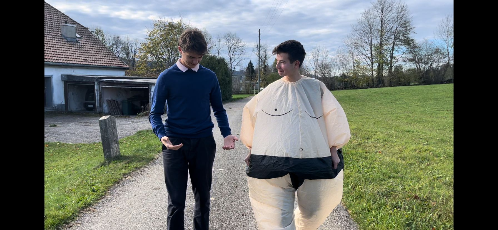
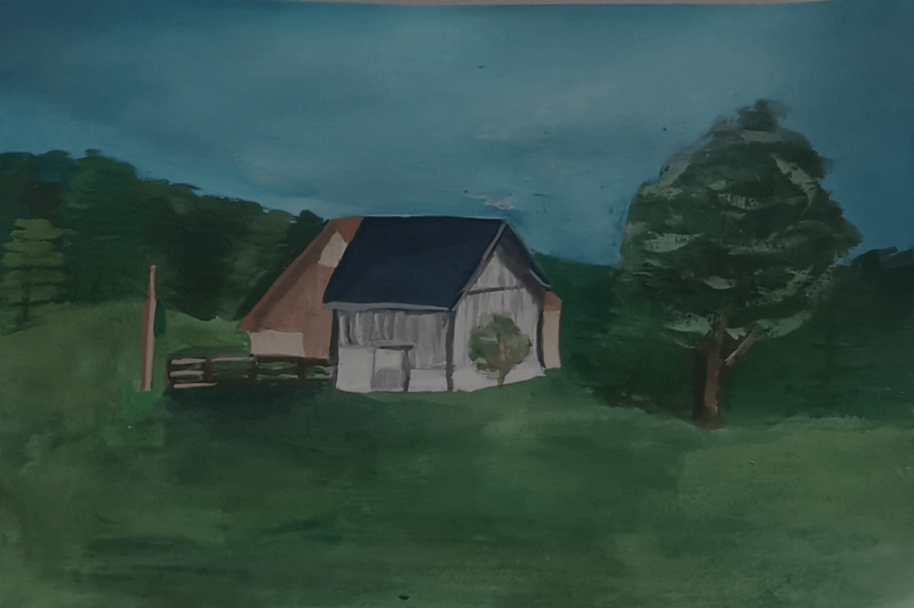
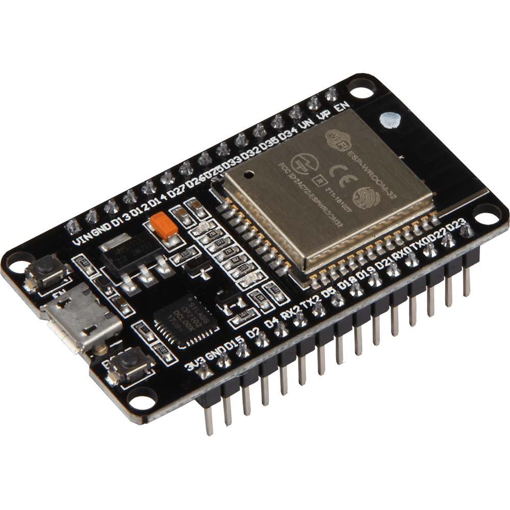
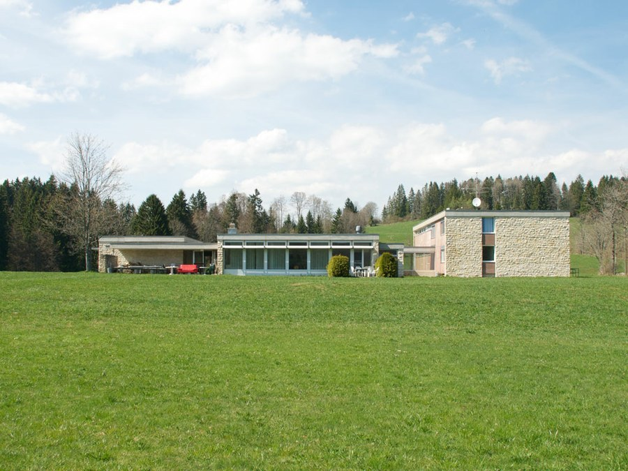

Willkommen
Dies ist die Offizielle Seite des LAP1 der 1a GKG. Zusammen mit Frau Lipawsky sowie Herr Weiss sind wir eine Woche lang in das Studienheim "la "Ferrière" gefahren um uns eine Woche lang mit dem Thema "Parallel" auszusetzen. Die Endprodukte dieses Lagers werden hier nun ausgestellt.
Parallel ?
Desto mehr man über das Wort "Parallel" nachdenkt, kommen einem auch immer mehr Ideen in den Sinn. Für uns gab es ein klares Hauptthema unter allen Themen, und zwar "Parallelwelten". Viele unserer Projekte setzen sich mit Parallelwelten auseinander, so auch diese Internet Seite.
Mehr Erfahren?
Hier geht es zu all den verschiedensten Projekten! Wie erwähnt, alle Projekte wurden während der LAP1 Woche erstellt und (zum Grossteil) fertiggestellt.
   